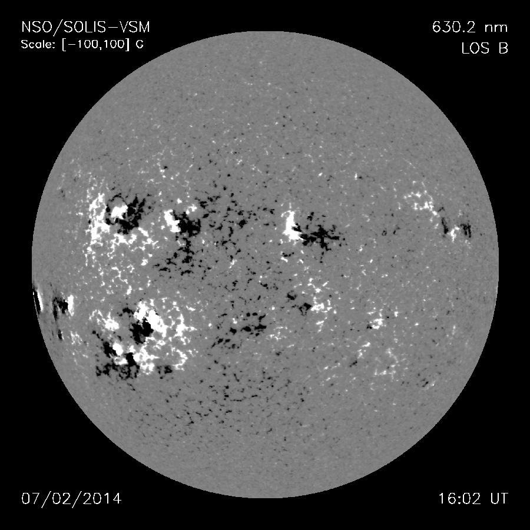

There are several methods to study the Sun depending on your specific interest.
For example if you are interested in learning about flares, there are some flares that are observable in the visible region of the EM spectrum, that are called white light flares.
There are ground and space based instruments that may be able to detect the X-ray particles emitted as part of these flares.
Usually the detections are done separately in the soft and hard X-ray channels.
Such instruments are often used to detect whether a flare has happened or not and since they mostly integrate the x-ray emission over the whole disc of the Sun, the location information would be lost for where the flare has occurred.
We mentioned the possibility of using the Zeeman effect to quantify the magnetic field in the Sun. In fact it is possible to build a map of the Sun using this magnetic field measurement.
Such a map in which the areas of strong positive magnetic field are colored white, the strong negative magnetic field regions are colored black and grey regions show areas with an absence of magnetic fields.
Coronographs are used to continously observe the Corona by artificially eclisping the Sun with the help of an occulting disc.
The light obtained using this can be further subjected to spectroscopic analysis.
Figure:
NISP/SOLIS magnetogram from 18 June 2014 during solar maximum.
|

|
Subsections